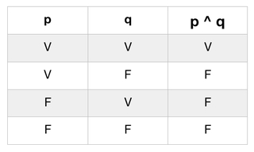
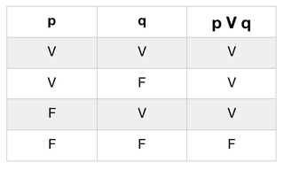
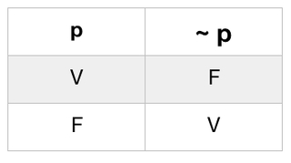
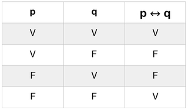

Matemática Discreta
Nessa seção voce irá aprender sobre Lógica Formal e Grafos
Lógica Formal Parte II
Operações Lógicas sobre Proposições
Quando pensamos, realizamos muitas vezes certas operações sobre proposições, chamadas operações lógicas. As operações lógicas obedecem a regras de cálculo, denominado cálculo proposicional, semelhante ao da matemática sobre números. Iremos estudar a seguir as operações lógicas fundamentais.
1. CONJUNÇÃO
Chama-se conjunção de duas proposições p e q a proposição representada por “p e q”, cujo valor lógico é a verdade (V) quando as duas proposições p e q são ambas verdadeiras e a falsidade (F) nos demais casos.
Para representar simbolicamente a conjunção de duas proposições p e q, utilizamos a seguinte notação: "p ^ q”, que lê-se “p e q”.
Vejamos a seguir a tabela verdade da conjunção “p ^ q”
Vejamos alguns exemplos:
1º - “O Brasil é um país rico e grande.”
- p: O Brasil é rico (V)
- q: O Brasil é grande (V)
- p ^ q : O Brasil é um país rico e grande (V)
- V(p ^ q) = V(p) ^ V(q) = V ^ V = V
2º - “O céu é azul e a terra é plana.”
- p: O céu é azul (V)
- q: A terra é plana (F)
- p ^ q : O céu é azul e a terra é plana (F)
- V(p ^ q) = V(p) ^ V(q) = V ^ F = F
3º - “Luiz é médico e artista.”
- p: Luiz é médico (F)
- q: Luiz é artista (V)
- p ^ q : Luiz é médico e artista (F)
- V(p ^ q) = V(p) ^ V(q) = F ^ V = F
4º - “O presidente é honesto e inteligente.”
- p: O presidente é honesto (F)
- q: O presidente é inteligente (F)
- p ^ q : O presidente é honesto e inteligente (F)
- V(p ^ q) = V(p) ^ V(q) = F ^ F = F
1. DISJUNÇÃO
Chama-se disjunção de duas proposições p e q a proposição representada por "p e q”, cujo valor lógico é a verdade (V) quando ao menos uma das proposições p e q é verdadeira e falsidade (F) quando as proposições p e q são ambas falsas.
Para representar simbolicamente a disjunção de duas proposições p e q, utilizamos a seguinte notação: "p V q”, que lê-se “p ou q”.
Vejamos a seguir a tabela verdade da disjunção "p V q”:
Vejamos alguns exemplos:
1º - “Rosseau é francês ou filósofo.”
- p: Rosseau é francês (V)
- q: Rosseau é filósofo (V)
- p V q : Rosseau é francês ou filósofo (V)
- V(p V q) = V(p) V V(q) = V V V = V
2º - “Camões escreveu Os Lusíadas ou Odisseia.”
- p: Camões escreveu Os Lusíadas (V)
- q: Camões escreveu Odisseia (F)
- p V q : Camões escreveu Os Lusíadas ou Odisseia (V)
- V(p V q) = V(p) V V(q) = V V F = V
3º - “O sol gira em torno da terra ou a terra gira em torno do sol.”
- p: O sol gira em torno da terra (F)
- q: A terra gira em torno do sol (V)
- p V q : O sol gira em torno da terra ou a terra gira em torno do sol (V)
- V(p V q) = V(p) V V(q) = F V V = V
4º - “Roma é a capital da Rússia ou dos Estados Unidos da America.”
- p: Roma é a capital da Rússia (F)
- q: Roma é a capital dos Estados Unidos da America (F)
- p V q : Roma é a capital da Rússia ou dos Estados Unidos da America (F)
- V(p V q) = V(p) V V(q) = F V F = F
3. NEGAÇÃO
Chama-se a negação de uma proposição p a proposição representada por “não p”, cujo valor lógico é a verdade (V) quando p é falsa e falsidade (F) quando p é verdadeira. Desta forma, “não p” tem sempre o valor oposto de p.
Para representar simbolicamente a negação de p, utilizamos as seguintes notações: “~ p” ou “ ¬ p”, que lê-se “não p”. As duas formas são validas.
Vejamos a seguir a tabela verdade da negação de p:
Vejamos alguns exemplos:
1º - "O Sol é uma estrela."
- p: O Sol é uma estrela (V)
- ~p: O Sol não é uma estrela (F)
2º - “Otávio é cientista.”
- p: Otávio é cientista (V)
- ~p: Não é o caso que Otávio é cientista (F)
3º - “Renata é confusa.”
- p: Renata é confusa (V)
- ~p: É falso que Renata é confusa (F)
4. CONDICIONAL - IMPLICAÇÃO
Chama-se proposição condicional ou implicação uma proposição representada por “se p então q”, cujo valor lógico é a falsidade (F) no caso em que p é verdadeiro e q é falso e a verdade (V) nos demais casos.
Para representar simbolicamente a implicação de duas proposições p e q, utilizamos a seguinte notação: “p → q”, que também se lê das seguintes maneiras.
- (i) p é condição suficiente para q
- (ii) q é condição necessária para p
Vejamos a seguir a tabela verdade da implicação “p → q”:
Vejamos alguns exemplos:
1º - “Se a média de Ana é maior que sete, então Ana será aprovada.”
- p: A média de Ana é maior que sete (V)
- q: Ana será aprovada (V)
- p → q : Se a média de Ana é maior que sete, então Ana será aprovada (V)
- V(p → q) = V(p) → V(q) = V → V = V
2º - “Se a média de Ana é maior que sete, então Ana não será aprovada.”
- p: A média de Ana é maior que sete (V)
- q: Ana não será aprovada (F)
- p → q : Se a média de Ana é maior que sete, então Ana não será aprovada (F)
- V(p → q) = V(p) → V(q) = V → F = F
3º - “Se a média de Ana é menor que sete, então Ana não será aprovada.”
- p: A média de Ana é menor que sete (F)
- q: Ana não será aprovada (V)
- p → q : Se a média de Ana é menor que sete, então Ana não será aprovada (V)
- V(p → q) = V(p) → V(q) = F → V = V
4º - “Se a média de Ana é menor que sete, então Ana será aprovada.”
- p: A média de Ana é menor que sete (F)
- q: Ana será aprovada (F)
- p → q: Se a média de Ana é menor que sete, então Ana será aprovada (F)
- V(p → q) = V(p) → V(q) = F → F = F
4. BICONDICIONAL - BI-IMPLICAÇÃO
Chama-se proposição bicondicional ou bi-implicacão, uma proposição representada por “p se, e somente se, q”, cujo valor lógico é a verdade (V) quando p e q são ambas verdadeiras ou ambas falsas, e a falsidade (F) nos demais casos.
Para representar simbolicamente a bi-implicação de duas proposições p e q, utilizamos a seguinte notação: “p ↔ q”, que também se lê das seguintes maneiras.
- (i) p é condição necessária e suficiente para q
- (ii) q é condição necessária e suficiente para p
Vejamos a seguir a tabela verdade da bi-implicação “p ↔ q”:
Vejamos alguns exemplos:
1º - “Frida será uma artista renomada se, e somente se, suas obras forem famosas.”
- p: Frida é uma artista renomada (V)
- q: Suas obras são famosas (V)
- p ↔ q : Frida será uma artista renomada se, e somente se, suas obras forem famosas (V)
- V(p ↔ q) = V(p) ↔ V(q) = V ↔ V = V
2º - “Frida será uma artista renomada se, e somente se, suas obras forem desconhecidas.”
- p: Frida é uma artista renomada (V)
- q: Suas obras são desconhecidas (F)
- p ↔ q : Frida será uma artista renomada se, e somente se, suas obras forem desconhecidas (F)
- V(p ↔ q) = V(p) ↔ V(q) = V ↔ F = F
3º - “Frida será uma artista anônima se e somente se suas obras forem famosas.”
- p: Frida é uma artista anônima (F)
- q: Suas obras são famosas (V)
- p ↔ q : Frida será uma artista anônima se, e somente se, suas obras forem famosas (V)
- V(p ↔ q) = V(p) ↔ V(q) = F ↔ V = F
4º - “Frida será uma artista anônima se e somente se suas obras forem desconhecidas.”
- p: Frida é uma artista anônima (F)
- q: Suas obras são desconhecidas (F)
- p ↔ q : Frida será uma artista anônima se, e somente se, suas obras forem desconhecidas (F)
- V(p ↔ q) = V(p) ↔ V(q) = F ↔ F = V
Exercícios
Agora teste o seu grau de aproveitamento do conteúdo resolvendo os exercícios a seguir
OPERAÇÕES LÓGICAS SPOBRE PROPOSIÇÕES
1. Sejam as proposições "p: Está frio" e "q: Está chovendo". Traduza para a linguagem corrente as seguintes proposições:
- a) ~ p
- b) p ^ q
- c) p V q
- d) q ↔ p
- e) p → ~ q
- f) p V ~ q
- g) ~ p ^ ~ q
- h) p ↔ ~ q
- i) p ^ ~ q → p
2. Dadas as proposições "p: João é gaúcho" e "q: Jaime é paulista". Traduza para a linguagem corrente as seguintes proposições:
- a) ~ (p ^ ~ q)
- b) ~ ~ p
- c) ~ (~ p V ~ q)
- d) p → ~ q
- e) ~ p ↔ ~ p
- f) ~ (~ q → p)
3. Dadas as proposições "p: Marcos é alto" e "q: Marcos é elegante". Traduza para a linguagem simbólica as seguintes proposições:
- a) Marcos é alto e elegante
- b) Marcos é alto, mas não é elegante
- c) Não é verdade que Marcos é baixo ou elegante
- d) Marcos não é nem alto e nem elegante
- e) Marcos é alto ou é baixo e elegante
- f) É falso que Marcos é baixo ou que é elegante
4. Dadas as proposições "p: Sueli é rica" e "q: Sueli é feliz". Traduza para a linguagem simbólica as seguintes proposições:
- a) Sueli é pobre, mas feliz
- b) Sueli é rica ou infeliz
- c) Sueli é pobre e infeliz
- d) Sueli é pobre ou rica, mas é infeliz
Gabarito
Confira suas respostas
Exercício 1
- a) Não está frio
- b) Está frio e está chovendo
- c) Está frio ou está chovendo
- d) Está chovendo se, e somente se, está frio
- e) Se está frio, então não está chovendo
- f) Está frio ou não está chovendo
- g) Não está frio e não está chovendo
- h) Está frio se, e somente se, não esta chovendo
- i) Se está frio e não está chovendo, então está frio
Exercício 2
- a) Não é verdade que João é gaúcho e Jaime não é paulista
- b) Não é verdade que João não é gaúcho
- c) Não é verdade que João não é gaúcho ou que Jaime não é paulista
- d) Se João é gaúcho, então Jaime não é paulista
- e) João não é gaúcho se, e somente se, Jaime não é paulista
- f) Não é verdade que, se Jaime não é paulista, então João é gaúcho
Exercício 3
- a) p ^ q
- b) p ^ ~ q
- c) ~ (~ p V q)
- d) ~ p ^ ~ q
- e) p V (~ p ^ q)
- f) ~ (~ p V ~ q)
Exercício 4
- a) ~ p ^ q
- b) p V ~ q
- c) ~ p ^ ~ q
- d) (~ p V q) ^ ~ q